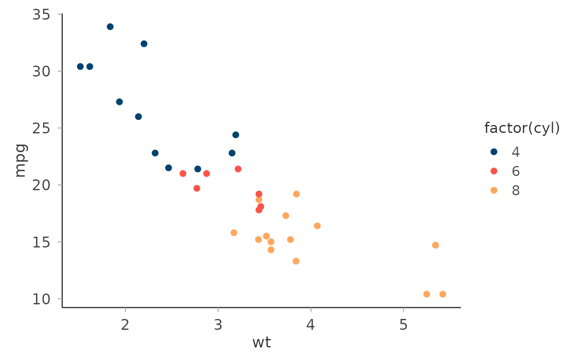

A clean, minimal ggplot2 theme built on ggplot2::theme_minimal() with
typography and spacing consistent with Circadia Lab figures.
Arguments
- base_size
Base font size in points. Default
12.- base_family
Base font family. Default
""(ggplot2 default).- grid
Which grid lines to show. One of
"xy"(both, default),"x"(vertical only),"y"(horizontal only),"none".- legend_position
Position of the legend passed to
ggplot2::theme(). Default"right".
Value
A ggplot2::theme() object.
Examples
library(ggplot2)
ggplot(mtcars, aes(wt, mpg, colour = factor(cyl))) +
geom_point(size = 2) +
scale_colour_circadia() +
theme_circadia()
